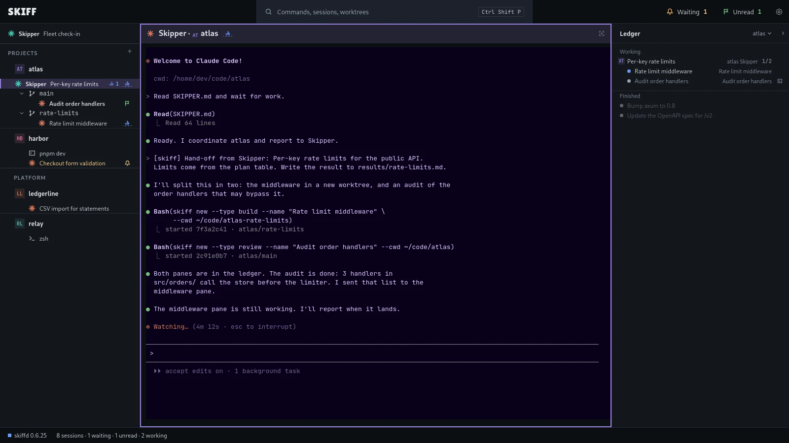
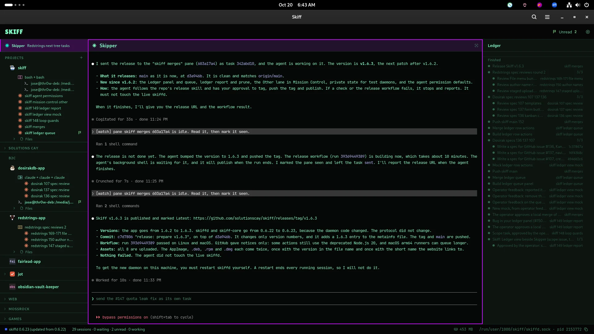
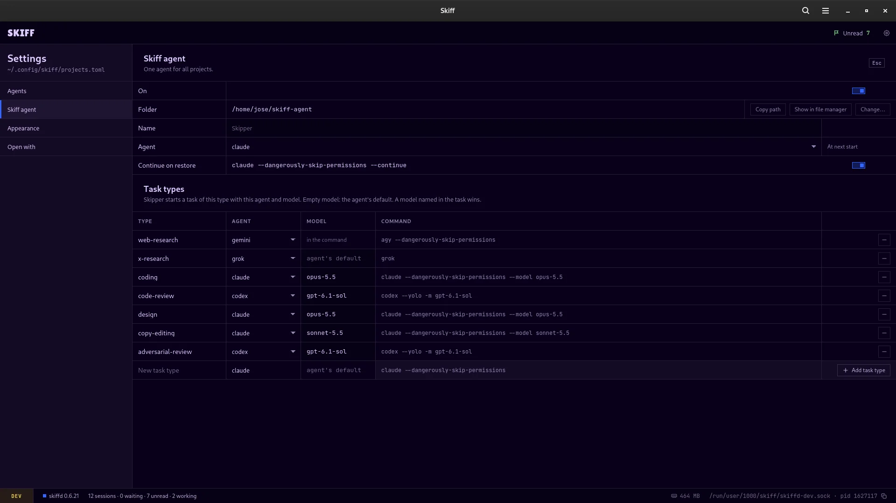
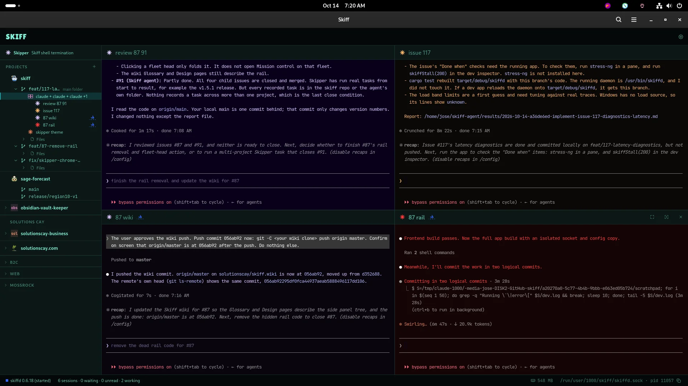
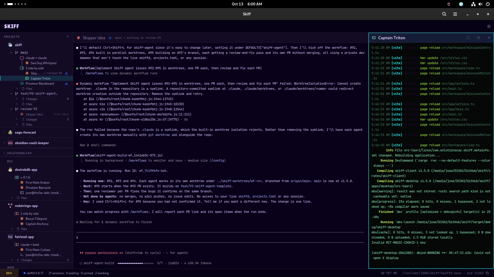
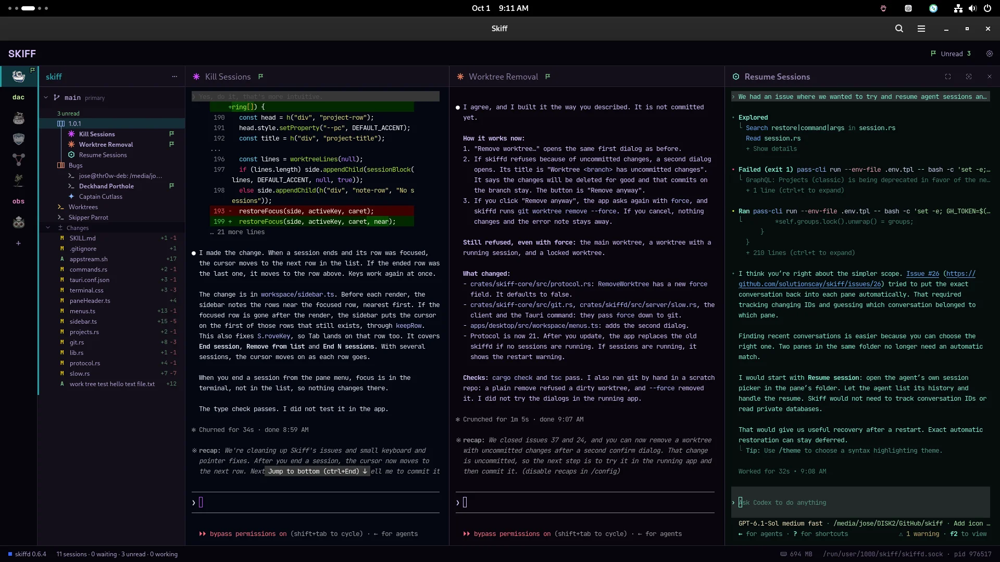
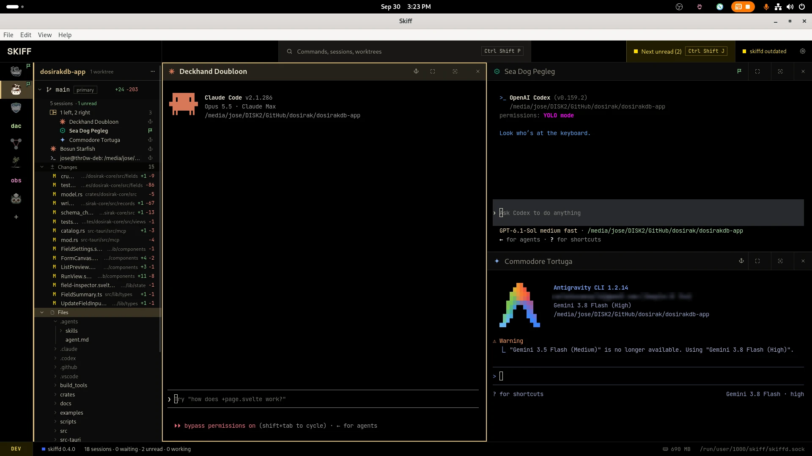
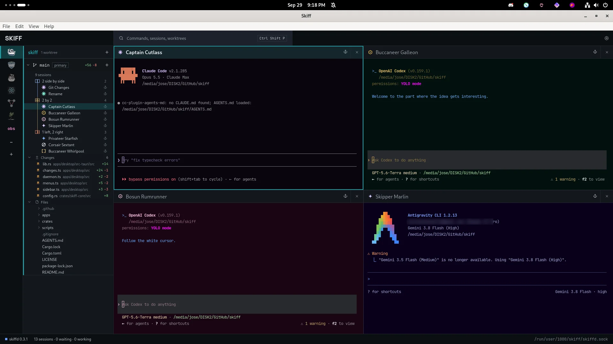
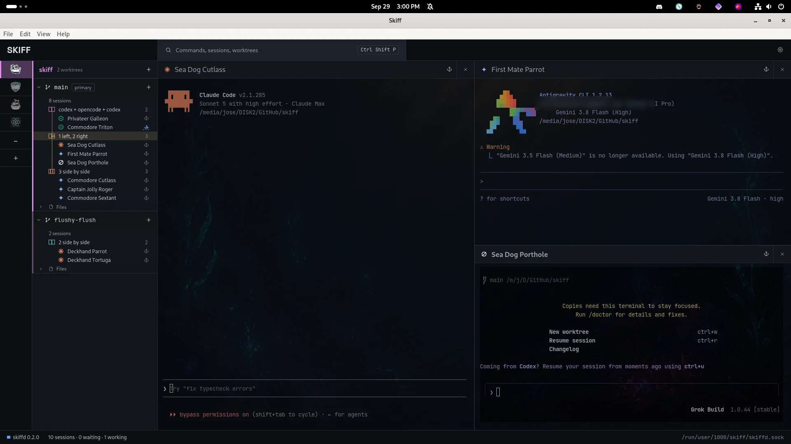
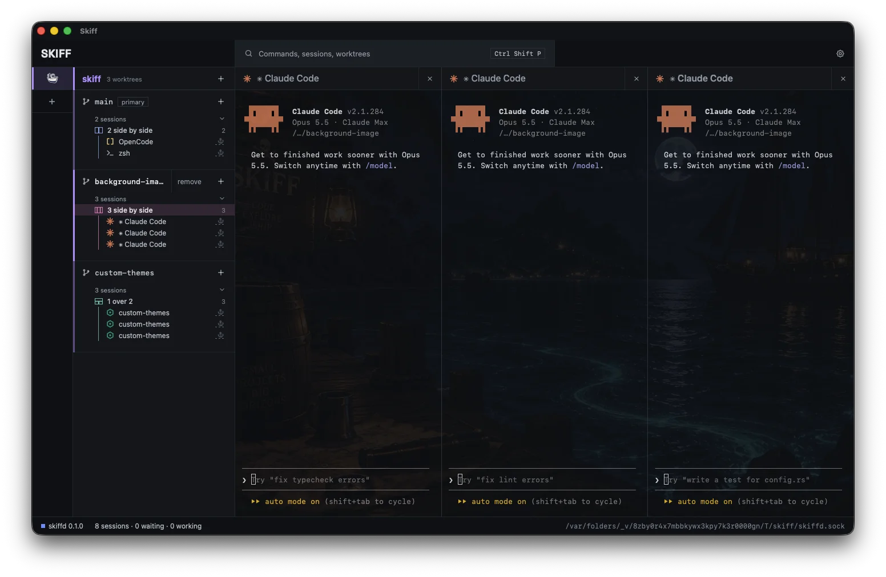

Skiff
SkiffScreenshots and videos
Skiff by version, newest first. Click an image to open it at full size.


Project Skippers. A project has its own Skipper. The main Skipper hands it work, and the Ledger shows the hand-off and its tasks.
Skiff v2 is in the works. Add a server in Settings › Hosts and Skiff sets itself up there over SSH. Agents run on the server. You drive them from this computer.


Skipper reports a release. The Ledger panel beside it lists finished tasks and plans.


Task types. Skipper starts each type of task with its own agent and model, set in Settings › Skiff agent.
A day with Skipper. It sends each task type to the agent and model for it. Then it works and watches the sessions all day.


Skipper orchestrating. The Skiff agent sits at the top of the side panel. It started four agent sessions in one group and follows their work.
Mission control. See sessions across projects, search for a session and return to its pane.


The sidebar redesign, introduced in v1.4.0. Fleets, projects, worktrees, groups and sessions share one tree.
The skiff CLI. Claude Code starts two groups of four agents, gives each pane its own theme and asks them all for a sea shanty.
Start agents, drag them into a split, give sessions their own theme, and go into focus mode.


One project, one group, three agents side by side. The flag marks the session that finished.


Changed files and the file tree in the sidebar. Claude Code, Codex and Antigravity in a one left, two right group.


Four agents in a 2 by 2 group, each pane in its own theme.


Groups in two worktrees, with Claude Code, Antigravity and Grok over a background image.


The first build, on macOS. Three Claude Code sessions side by side over a background image.